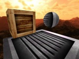

CopperLicht API Documentation
CopperLicht API documentation
Welcome to the CopperLicht 3D Engine API documentation. You'll find any information you'll need to develop 3d games and applications with the CopperLicht 3D Engine here. If you are looking for a tutorial on how to start, you'll find some on the homepage of the CopperLicht 3D Engine or inside the SDK in the examples directory.
Tutorials
| Hello World Shows how to display a very simple interactive 3d scene using CopperLicht. No programming required for this tutorial. |
|
| Movement and Keyboard input Shows how to move 3d objects by pressing keys, and how to use animators. |
 |
| Realtime 3D Shadows Demonstrates how to enable realtime 3D shadows CopperLicht. |
|
| Collision detection and response Demonstrates how to do collision detection in CopperLicht. |
|
| Character animation Demonstrates how to do character animation in CopperLicht. |
|
| Custom Scene Nodes Shows how create a custom scene node and how to use CopperLicht without CopperCube. You will also see how to load textures, use BillBoards and Cameras and how to change Materials. |
|
| 2D Overlays Demonstrates 2d text overlays, how to caculate the 2d position from a 3d position and how to use the OnAnimate handler. |
|
| Custom materials and shaders Demonstrates how to create custom materials and shaders. |
Class Index
A list of all classes in CopperLicht:
| _global_ | |
| CL3D | The main namespace for CopperLicht |
| CL3D.AnimatedMeshSceneNode | A scene node displaying an animated Mesh, usually a skeletal animated character. |
| CL3D.Animator | An animator can be attached to a scene node and animates it. |
| CL3D.AnimatorAnimateTexture | Scene node animator changing the texture of SceneNodes so that they appear animated. |
| CL3D.AnimatorCameraFPS | Special scene node animator for first person shooter cameras. |
| CL3D.AnimatorCameraModelViewer | Special scene node animator for model viewer cameras. |
| CL3D.AnimatorCollisionResponse | Scene node animator making CL3D.SceneNodes move using autoamtic collision detection and response |
| CL3D.AnimatorFlyCircle | Scene node animator making CL3D.SceneNodes move in a circle |
| CL3D.AnimatorFlyStraight | Scene node animator making CL3D.SceneNodes move along straight line between two points. |
| CL3D.AnimatorFollowPath | Scene node animator making CL3D.SceneNodes move along a path, uses CL3D.PathSceneNode to define the path. |
| CL3D.AnimatorOnClick | Scene node animator which invokes a callback function when the scene node has been clicked. |
| CL3D.AnimatorOnProximity | Scene node animator which invokes a callback function when the scene node gets near another scene node. |
| CL3D.AnimatorRotation | Scene node animator making CL3D.SceneNodes rotate |
| CL3D.BillboardSceneNode | A billboard is like a 3d sprite: A 2d element, which always looks to the camera. |
| CL3D.BoundingBoxTriangleSelector | Interface to return triangles with specific properties, useful for collision detection. |
| CL3D.Box3d | Axis aligned bounding box. |
| CL3D.CameraSceneNode | Scene Node which is a (controlable) camera. |
| CL3D.ColorF | A class holding a floating point color, consisting of four Numbers, for r, g, b and alpha |
| CL3D.CopperCubeVariable | Interface class for accessing CopperCube variables |
| CL3D.CopperLicht | The main class of the CopperLicht engine, representing the 3D engine itself. |
| CL3D.CubeSceneNode | A class rendering a simple cube of default size 10 with one material. |
| CL3D.HotspotSceneNode | |
| CL3D.Light | A class holding the data of a point light. |
| CL3D.LightSceneNode | class rendering a point light. |
| CL3D.Line3d | 3d line class, decribing a line between two 3d points |
| CL3D.Material | Material description, usually for a MeshBuffer. |
| CL3D.Matrix4 | A 4x4 matrix, mostly used as transformation matrix for 3d calculations. |
| CL3D.Mesh | Class which holds the geometry of an object |
| CL3D.MeshBuffer | A buffer containing a set of geometry with one material. |
| CL3D.MeshSceneNode | A scene node displaying a static Mesh. |
| CL3D.MeshTriangleSelector | Interface to return triangles with specific properties, useful for collision detection. |
| CL3D.MetaTriangleSelector | Interface for making multiple triangle selectors work as one big selector. |
| CL3D.Mobile2DInputSceneNode | Scene Node which draws a 2d mobile input control |
| CL3D.OctTreeTriangleSelector | OctTree implementation of a triangle selector, useful for collision detection. |
| CL3D.Overlay2DSceneNode | Scene Node which draws a 2d overlay with color, image and/or text |
| CL3D.ParticleSystemSceneNode | A particle system is a simple way to simulate things like fire, smoke, rain, etc in your 3d scene. |
| CL3D.PathSceneNode | A path scene node stores a 3d path which can be used for example by CL3D.Animators to move CL3D.SceneNodes along it. |
| CL3D.Plane3d | 3d plane class with lots of operators and methods |
| CL3D.Quaternion | Quaternion class for representing rotations |
| CL3D.Renderer | 3D renderer, interface for drawing 3d geometry. |
| CL3D.Scene | A 3d scene, containing all SceneNodes. |
| CL3D.SceneNode | The base class for scene nodes, a node in the hierarchical 3d scene rendering graph. |
| CL3D.SkyBoxSceneNode | A class rendering a sky box around the whole scene. |
| CL3D.SoundSceneNode | A sound scene node represents and plays a 3d sound |
| CL3D.TerrainSceneNode | |
| CL3D.Texture | Class representing a texture which can be loaded from an URL. |
| CL3D.TextureManager | texture manager containing all Textures and able to load new ones, accessible via CopperLicht.getTextureManager(). |
| CL3D.Triangle3d | 3d triangle class consisting of 3 points in space, formin a triangle |
| CL3D.TriangleSelector | Interface to return triangles with specific properties, useful for collision detection. |
| CL3D.Vect2d | 2d vector class, used for example for texture coordinates. |
| CL3D.Vect3d | 3d vector class with lots of operators and methods |
| CL3D.Vertex3D | A 3d vertex, ususally used in MeshBuffers |
| CL3D.WaterSurfaceSceneNode | A class rendering a reflective water surface. |